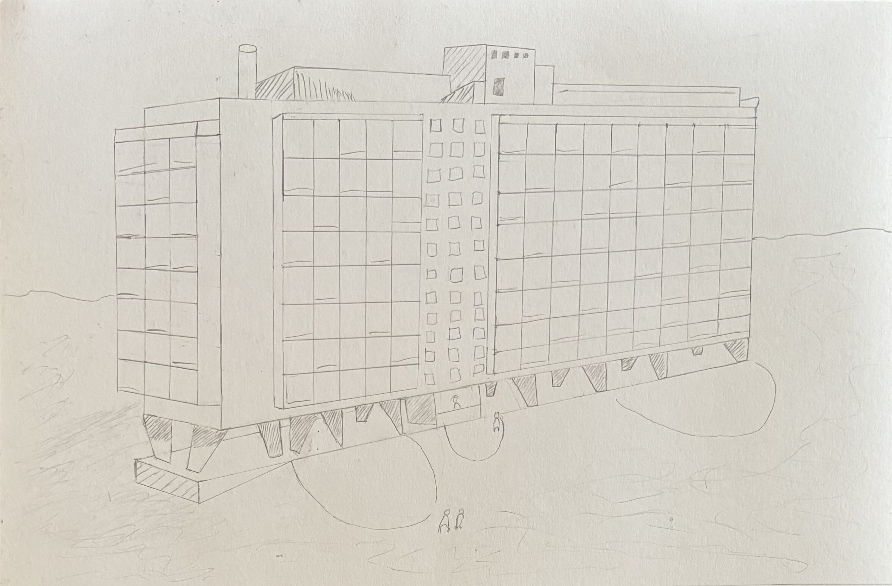

Dalla teoria alla pratica: L'estetica sociale nell'Unité d'Habitation di Le Corbusier
Nel panorama culturale contemporaneo, l'arte viene troppo spesso relegata negli spazi protetti dei musei o ridotta a puro elemento decorativo per gallerie e collezioni private. Tuttavia, esiste una linea di pensiero che ha cercato di spezzare questo isolamento, riportando l'estetica al centro dell'esperienza quotidiana dell'uomo. Il manifesto più audace ed efficace di questo cambiamento è senza dubbio l'Unité d'Habitation di Marsiglia, la celebre Cité Radieuse progettata da Le Corbusier nel secondo dopoguerra. Con questo edificio, la ricerca della bellezza cessa di essere un lusso formale per trasformarsi in una necessità sociale, un'architettura in cui ogni dettaglio plastico nasce per servire la vita reale.

Foto della ricreazione personale
I cinque pilastri di una nuova estetica
Per comprendere la carica innovativa di questo progetto occorre fare un passo indietro ed esplorare i principi teorici che Le Corbusier aveva formulato negli anni Venti, qui spinti verso la loro massima maturazione pratica. L'intero edificio si stacca dal suolo grazie ai massicci pilotis in cemento armato, pilastri che non solo liberano il terreno sottostante restituendo spazio alla natura e al passaggio delle persone, ma trasformano la struttura stessa in un volume leggero che sembra fluttuare nel paesaggio. L'assenza di muri portanti interni consente di sviluppare una pianta libera, dove gli appartamenti si articolano come incastri flessibili intorno alle esigenze concrete di chi li abita, affiancati da una facciata libera che si svincola dal peso dell'edificio per diventare una membrana aperta verso la luce. Le lunghe finestre a nastro tagliano orizzontalmente i fronti della struttura, inondando gli ambienti di sole e stabilendo un contatto visivo costante con l'esterno. Infine, la copertura dell'edificio rifiuta il tradizionale tetto a falde per trasformarsi in un vero e proprio tetto-giardino, un palcoscenico pubblico dove la comunità può ritrovarsi tra sculture funzionali, spazi per lo sport e una vista mozzafiato sul mare e sulle montagne. In quest'ottica, i cinque punti dell'architettura moderna smettono di essere semplici regole ingegneristiche per diventare gli strumenti attraverso cui l'arte plasma la quotidianità.
Il Modulor e la misura dell'uomo
Ma la bellezza dell'Unité d'Habitation non si arresta alla grande scala architettonica; essa penetra nella dimensione più intima del vivere attraverso il Modulor, la scala antropometrica ideata da Le Corbusier unendo le proporzioni del corpo umano al principio della sezione aurea. Progettare uno spazio sulla misura precisa dell'uomo significa rifiutare sia il monumentale fine a se stesso sia la ristrettezza soffocante. Dall'altezza dei soffitti alla sagoma dei balconi, fino ai mobili incassati negli appartamenti, ogni elemento risponde a una sottile armonia visiva e funzionale. L'utente non deve adattarsi allo spazio, ma è lo spazio che accoglie i suoi gesti naturali. L'estetica sociale si manifesta proprio in questo equilibrio: la forma artistica diventa autentica solo quando genera benessere psicofisico e facilità di movimento nel giorno per giorno.

Immagine dell'Unité d'habitation, Berlin, 1956.
La poesia della materia e la città verticale
Accanto alla precisione matematica del Modulor si colloca un'altra rivoluzione espressiva: l'uso del béton brut, il cemento armato lasciato a vista che mostra orgogliosamente le venature dei casseri in legno utilizzati per la colata. Rinunciando ai rivestimenti preziosi e agli intonaci ingannevoli, Le Corbusier fonda una nuova sensibilità materiale e industriale, dove l'autenticità costruttiva si trasforma in poesia e i vivaci colori primari inseriti nei balconi spezzano la rigidità del grigio filtrando la luce del sole. Questa attenzione alla materia si fonde con l'idea di trasformare l'edificio in una vera e propria città verticale. Nei suoi dodici piani, l'Unité d'Habitation non ospita soltanto centinaia di appartamenti, ma integra strade interne con negozi, una lavanderia, un albergo e persino una scuola materna sul tetto. L'abitare smette di essere un fatto individuale isolato e si trasforma in un'esperienza collettiva. L'eredità che Le Corbusier ci consegna con la Cité Radieuse risiede proprio nel dimostrare che la vita pratica non è nemica dell'arte, ma la sua destinazione più alta. Quando l'architettura risponde con misura, dignità e verità ai bisogni fisici e sociali dell'uomo, la casa stessa smette di essere un semplice riparo per diventare una straordinaria opera d'arte da vivere a piedi scalzi.